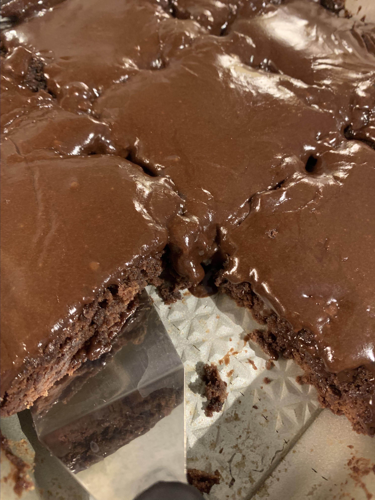

Brownies

Description
A chocolate brownie or simply a brownie is a square or
rectangular chocolate baked confection. Brownies come in
a variety of forms and may be either fudgy or cakey, depending
on their density. Brownies often, but not always,
have a glossy "skin" on their upper crust.
Ingredients
- ½ cup butter
- 1 cup white sugar
- 2 eggs
- 1 teaspoon vanilla extract
- ⅓ cup unsweetened cocoa powder
- ½ cup all-purpose flour
- ¼ teaspoon salt
- ¼ teaspoon baking powder
- 3 tablespoons butter, softened
- 3 tablespoons unsweetened cocoa powder
- 1 tablespoon honey
- 1 teaspoon vanilla extract
- 1 cup confectioners' sugar
Steps
- Preheat oven to 350F degrees and grease an 8 inch pan.
- In a small saucepan, add the butter over medium low heat
and cook until the butter comes to a slight simmer, about 5 minutes.
- In a large bowl, stir the melted butter, sugar, eggs,
and vanilla extract. Then add in your dry ingredients,
the cocoa, flour, salt, and baking powder.
- Pour the brownie batter into the prepared baking pan and bake
for 25-30 minutes or until the center is set. Check by placing a
toothpick or knife into the center of the brownies. When you can
pull the toothpick or knife out without brownie batter sticking they are done.
- Allow to cool for 20-30 minutes before slicing and serving.